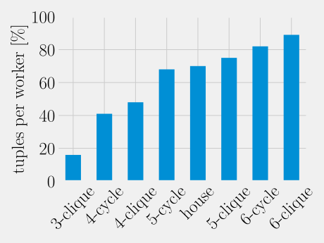

Fast, scalable WCOJ graph-pattern matching on in-memory graphs in Spark
Presented by Per Fuchs
Supervised by Peter Boncz and Bogdan Ghit
Master thesis in Computer Science
Cyclic queries in graph-pattern matching pose new challenges to relational engines


triangles(a, b, c) <- R(a, b), S(b, c), T(c, a)
Worst-case optimal joins to the rescue
- developed 2012 and proven to be worst-case optimal, e.g. for triangles in O(N3/2) and in general by the AGM bound
- Idea: build the join by variable-at-a-time approach
- no intermediary results
- high performance for graph-pattern matching is well established: [1] 2015, [2] 2015, [3] 2017, [4] 2018
Our contributions
- designing a scalable WCOJ for Spark
- Which distribution scheme to use?
- open-source
- integrate the WCOJ with Cypher on Apache Spark (stretch goal)
- specializing WCOJ to graph pattern matching
- former literature indicates that this is the main use case
1st contribution: designing a scalable WCOJ in Spark
Background: Spark
- Spark distributes data over workers
- computation follows the Bulk synchronous parallel model (local computations, shuffle, local computations, etc)
- joins work by shuffling the data such that the distribution allows local join algorithms
Hypercube shuffle: optimal distribution for n-ary joins
Idea
- organize p workers in a hypercube
- one dimension per variable
- configurable ki size per dimension
- such that p = ∏i ki
- proven to be communication optimal
triangles(a, b, c) <- R(a, b), S(b, c), T(c, a)
Hypercube shuffle: optimal distribution for n-ary joins

triangles(a, b, c) <- R(a, b), S(b, c), T(c, a)
| a | b |
|---|---|
| 1 | 2 |
| 2 | 3 |
| 2 | 4 |
| 3 | 1 |
(2, 0, *)
| b | c |
|---|---|
| 1 | 2 |
| 2 | 3 |
| 2 | 4 |
| 3 | 1 |
(*, 0, 1)
| c | a |
|---|---|
| 1 | 2 |
| 2 | 3 |
| 2 | 4 |
| 3 | 1 |
(2, *, 1)
Hypercube shuffle converges to broadcasting for larger queries

- analysis by theoretic estimation and simulation
- a lot of duplicated work
- not scalable in query size
- not scalable in numbers of workers
- although being optimal
Our Solution: replicated EdgeFrame
- DataFrame specialized for edge relationship
- replicated on all workers
- uses compressed sparse row representation
- offers worst-case optimal join operation
- easily integrable into existing Spark projects
- open source
- logically partitioned (open research)
Do graphs fit into main memory?

- Study of openly available graph datasets
- SNAP
- Laborytory of Web Algorithms
- Total # Graphs: 154
- all but 3 fit into 256GB of RAM
- Maximum: 552 GB (Facebook 2011)
Parallelization via logical partitionings
- parallelization via logical partitioning: full dataset is on each worker but each worker only considers parts of it
- Hypercube
- slightly different angle then as distribution scheme
- can be pushed into the join
- in any case, deeper understanding of its scalability
- partition on the first attribute to bind by the WCOJ
- fight skew with Intel's adaptive query execution
2nd contribution: specializing WCOJ's
Specializing WCOJ's to graph-pattern matching: idea
- code specialization
- self-joins only
- two attributes only
- backing data structure: compressed sparse row (CSR)
- array access in O(1) instead of binary search in O(log N)
- logical optimizations
- materializing small intersections instead of building them during iteration
Specializing WCOJ's to graph-pattern matching: results


Where to find my work?
https://github.com/PerFuchs
Also, I'm looking for PhD opportunities or challenging positions in industry.
Take aways
- optimal distribution scheme does not scale
- therefore, replicate
- WCOJ should be specialized to graphs
- open source
List of datasets
Why are cyclic patterns important?
Facebook friends
Twitter followers